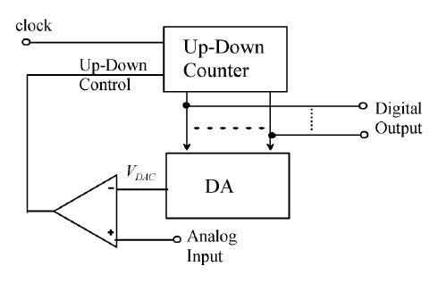
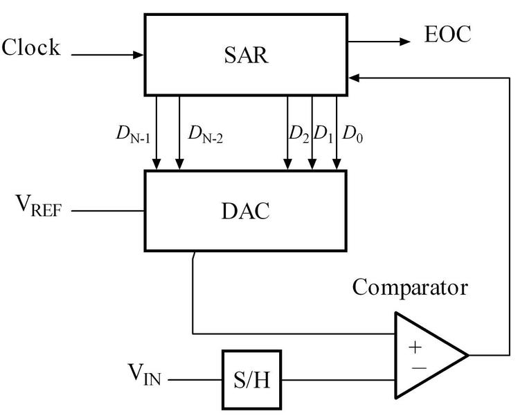
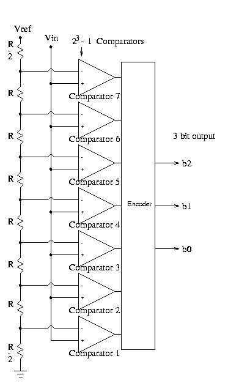
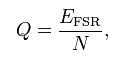
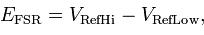
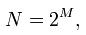
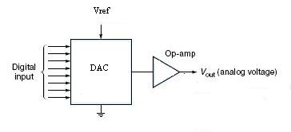
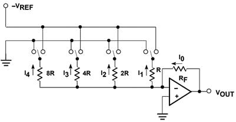
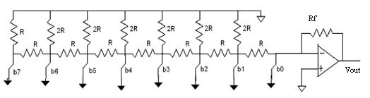

Aim
Aim
Aim
Simulate Analog to Digital Converter and Digital to Analog Converter
Pre-Requisites
- Knowledge of number system
- NI LabVIEW tool
Objectives
- Understand A/D and D/A converter
- Simulate A/D and D/A Converter
Aim
Simulate Analog to Digital Converter and Digital to Analog Converter
Pre-Requisites
Objectives


In nature most of the signal around us is analog in nature i.e. all changes and physical phenomenon occurring are continuous. However due to the various advantages of having data in digital format like storage, processing, transmission etc., we prefer to convert these continuous varying quantities into discreet digital values. This process in known as quantization and the device employed for quantization is known as an Analog to Digital Converter – ADC.
Most ADC’s use a circuit called a comparator. The circuit has two inputs and one output. Inputs are the analog signals & output is a single bit digital signal.
ADCs convert voltages that represent real-world signals into bits that microprocessors and software use to manipulate test data and control test equipment. Even if you work on digital signals exclusively, you probably use an ADC in an oscilloscope to look at the analog characteristics of your signals.
ADCs come in several basic architectures, although many variations exist for each type. Different types of test equipment need different types of ADCs. For example, a digital oscilloscope needs high digitizing speeds but can sacrifice resolution. Some PC-plug-in digitizers and RF test equipment use sub ranging ADCs, which provide better resolution than flash converters, but at the expense of speed. General-purpose data-acquisition equipment usually falls between scopes and DMMs for sample speed and resolution. This type of equipment uses successive-approximation register (SAR). A digital multimeter (DMM) needs fine resolution and can sacrifice high measurement speeds.
Following are the types of the ADC’s that are generally used:-
1.Counter type ADC
2.Successive approximation type ADC
3.Flash type ADC
1. Counter type ADC
One of the simplest types of the ADC is the Counter type ADC. The input signal of the ADC is connected to the signal input of its internal comparator. ADC then systematically increases the voltage on the reference input of the comparator until the reference becomes larger than the signal & the comparator output goes to zero.

Fig.1 Counter type ADC
2. Successive approximation type ADC
The most commonly used ADC is the successive approximation type of ADC due to its low cost. However, the successive approximation type of ADC has maximum conversion time of all types of ADCs.
The successive approximation ADC has been the mainstay of data acquisition systems for many years. Recent design improvements have extended the sampling frequency of these ADCs into the megahertz. The basic successive approximation ADC is shown in Figure 2. It performs conversions on command. In order to process ac signals, SAR ADCs must have an input sample-and-hold (SHA) to keep the signal constant during the conversion cycle.

Fig.2 Successive approximation type ADC
On the assertion of the CONVERT START command, the sample-and-hold (SHA) is placed in the hold mode, and the internal DAC is set to midscale. The comparator determines whether the SHA output is above or below the DAC output, and the result (bit 1, the most significant bit of the conversion) is stored in the successive approximation register (SAR). The DAC is then set either to ¼ scale or ¾ scale (depending on the value of bit 1), and the comparator makes the decision for bit 2 of the conversion. The result is stored in the register, and the process continues until all of the bit values have been determined. When all the bits have been set, tested, and reset or not as appropriate, the contents of the SAR correspond to the value of the analog input, and the conversion is complete. These bit "tests" form the basis of a serial output version SAR-based ADC. Note that the acronym "SAR" actually stands for Successive Approximation Register.
3. Flash type ADC

Fig.3 Flash type ADC
The Flash type of ADC has the least conversion time and is used in time critical applications such as a sample and hold circuit of a digital oscilloscope. The chief drawback of the flash type of ADC is its cost and hardware requirements. The hardware required for realizing the ADC increases as 2resolution i.e. a 3 bit ADC requires 8 op-amps while a 4 bit ADC needs 16 op-amps while a 5 bit ADC would need 32 op-amps.
The Flash Type of ADC is the fastest of all types of ADCs but has a high input capacitance, and are prone to produce glitches on the output (by outputting an out-of-sequence code).They are often used for video or other fast signals. The Flash type ADC can be realized on a PCB for demonstration purpose using readily available components at a low cost. The Flash type ADC however requires a large number of comparators that increases as 2Resolution.
The Flash type ADC, though is hardware intensive, has a simple operation and is easy to understand. The flash type ADC consists of an array of parallel comparators that is fed a threshold voltage derived from a reference voltage and potential divider to the inverting input terminal of the op-amp comparator and the input analog voltage to the non-inverting input terminal of the op-amp. On crossing the threshold (the voltage at the inverting input), the output of the comparator goes high. Since the threshold is derived from a potential divider, each comparator is set to go high at different threshold levels. However, as comparator for level n goes high, all comparator below n go high as well. So, a priority encoder is used to convert these input lines form the comparator into binary coded output. The priority encoder accepts an 8 line input and gives out a 3 bit binary output. Each of the input line has a progressively increasing priority. The output is a function of the highest priority input irrespective of the state of any lower priority inputs unlike simple encoders which outputs a bit-wise OR of all outputs corresponding to the various inputs. Since a priority encoder is a logic circuit and exhibits a propagation delay. Any output that is received during this period is invalid. A strobe signal should be used to latch the valid output. The conversion speed of a flash type ADC depends on the slew rate of the op-amps used and the propagation delay of the priority encoder. The output of the priority encoder is encoded to the 7-segment code which is a binary to 7-segment encoder and driver. This data is displayed on a 7-segment display as a digit. The output of the priority encoder and the 7-segment driver is so wired so as to blank the display on overflow of the ADC.
ADC Parameters
Resolution
The resolution of the converter indicates the number of discrete values it can produce over the range of analog values. The values are usually stored electronically in binary form, so the resolution is usually expressed in bits. In consequence, the number of discrete values available, or "levels", is usually a power of two. For example, an ADC with a resolution of 8 bits can encode an analog input to one in 256 different levels, since 28 = 256. The values can represent the ranges from 0 to 255 (i.e. unsigned integer) or from −128 to 127 (i.e. signed integer), depending on the application. Resolution can also be defined electrically, and expressed in volts. The minimum change in voltage required to guarantee a change in the output code level is called the LSB (least significant bit, since this is the voltage represented by a change in the LSB). The resolution Q of the ADC is equal to the LSB voltage. The voltage resolution of an ADC is equal to its overall voltage measurement range divided by the number of discrete voltage intervals:

Where N is the number of voltage intervals and EFSR is the full scale voltage range. EFSR is given by

Where VRefHi and VRefLow are the upper and lower extremes, respectively, of the voltages that can be coded.
Normally, the number of voltage intervals is given by

where M is the ADC's resolution in bits.
Some examples:
Example 1
Full scale measurement range = 0 to 10 volts
ADC resolution is 12 bits: 212 = 4096 quantization levels (codes)
ADC voltage resolution, Q = (10 V − 0 V) / 4096 = 10 V / 4096 ≈ 0.00244 V ≈ 2.44 mV.
Example 2
Full scale measurement range = -10 to +10 volts
ADC resolution is 14 bits: 214 = 16384 quantization levels (codes)
ADC voltage resolution is, Q = (10 V − (−10 V)) / 16384 = 20 V / 16384 ≈ 0.00122 V ≈ 1.22 mV.
Example 3
Full scale measurement range = 0 to 7 volts
ADC resolution is 3 bits: 23 = 8 quantization levels (codes)
ADC voltage resolution is, Q = (7 V − 0 V)/7 = 7 V/7 = 1 V = 1000 mV
Accuracy
An ADC has several sources of errors. Quantization error and (assuming the ADC is intended to be linear) non-linearity are intrinsic to any analog-to-digital conversion. There is also a so-called aperture error which is due to a clock jitter and is revealed when digitizing a time-variant signal (not a constant value).
These errors are measured in a unit called the LSB, which is an abbreviation for least significant bit. In the above example of an eight-bit ADC, an error of one LSB is 1/256 of the full signal range, or about 0.4%.
Quantization error
Quantization error (or quantization noise) is the difference between the original signal and the digitized signal. Hence, the magnitude of the quantization error at the sampling instant is between zero and half of one LSB. Quantization error is due to the finite resolution of the digital representation of the signal, and is an unavoidable imperfection in all types of ADCs.
Sampling rate
The analog signal is continuous in time and it is necessary to convert this to a flow of digital values. It is therefore required to define the rate at which new digital values are sampled from the analog signal. The rate of new values is called the sampling rate or sampling frequency of the converter.
A continuously varying band limited signal can be sampled (that is the signal values at intervals of time T, the sampling time, are measured and stored) and then the original signal can be exactly reproduced from the discrete-time values by an interpolation formula. The accuracy is limited by quantization error. However, this faithful reproduction is only possible if the sampling rate is higher than twice the highest frequency of the signal. This is essentially what is embodied in the Shannon-Nyquist sampling theorem.
Since a practical ADC cannot make an instantaneous conversion, the input value must necessarily be held constant during the time that the converter performs a conversion (called the conversion time). An input circuit called a sample and hold performs this task—in most cases by using a capacitor to store the analog voltage at the input, and using an electronic switch or gate to disconnect the capacitor from the input. Many ADC integrated circuits include the sample and hold subsystem internally.
Aliasing
All ADCs work by sampling their input at discrete intervals of time. Their output is therefore an incomplete picture of the behaviour of the input. There is no way of knowing, by looking at the output, what the input was doing between one sampling instant and the next. If the input is known to be changing slowly compared to the sampling rate, then it can be assumed that the value of the signal between two sample instants was somewhere between the two sampled values. If, however, the input signal is changing rapidly compared to the sample rate, then this assumption is not valid.
If the digital values produced by the ADC are, at some later stage in the system, converted back to analog values by a digital to analog converter or DAC, it is desirable that the output of the DAC be a faithful representation of the original signal. If the input signal is changing much faster than the sample rate, then this will not be the case, and spurious signals called aliases will be produced at the output of the DAC. The frequency of the aliased signal is the difference between the signal frequency and the sampling rate. For example, a 2 kHz sine wave being sampled at 1.5 kHz would be reconstructed as a 500 Hz sine wave. This problem is called aliasing.
To avoid aliasing, the input to an ADC must be low-pass filtered to remove frequencies above half the sampling rate. This filter is called an anti-aliasing filter, and is essential for a practical ADC system that is applied to analog signals with higher frequency content.
Although aliasing in most systems is unwanted, it should also be noted that it can be exploited to provide simultaneous down-mixing of a band-limited high frequency signal (see undersampling and frequency mixer).
Dither
In A-to-D converters, performance can usually be improved using dither. This is a very small amount of random noise (white noise) which is added to the input before conversion. Its amplitude is set to be twice the value of the least significant bit. Its effect is to cause the state ofthe LSB to randomly oscillate between 0 and 1 in the presence of very low levels of input, rather than sticking at a fixed value. Rather than the signal simply getting cut off altogether at this low level (which is only being quantized to a resolution of 1 bit), it extends the effective range of signals that the A-to-D converter can convert, at the expense of a slight increase in noise - effectively the quantization error is diffused across a series of noise values which is far less objectionable than a hard cutoff. The result is an accurate representation of the signal over time. A suitable filter at the output of the system can thus recover this small signal variation.
An audio signal of very low level (with respect to the bit depth of the ADC) sampled without dither sounds extremely distorted and unpleasant. Without dither the low level may cause the least significant bit to "stick" at 0 or 1. With dithering, the true level of the audio may be calculated by averaging the actual quantized sample with a series of other samples [the dither] that are recorded over time.
A virtually identical process, also called dither or dithering, is often used when quantizing photographic images to a fewer number of bits per pixel—the image becomes noisier but to the eye looks far more realistic than the quantized image, which otherwise becomes banded. This analogous process may help to visualize the effect of dither on an analogue audio signal that is converted to digital.
Dithering is also used in integrating systems such as electricity meters. Since the values are added together, the dithering produces results that are more exact than the LSB of the analog-to-digital converter.
Note that dither can only increase the resolution of a sampler, it cannot improve the linearity, and thus accuracy does not necessarily improve.
Oversampling
Usually, signals are sampled at the minimum rate required, for economy, with the result that the quantization noise introduced is white noise spread over the whole pass band of the converter. If a signal is sampled at a rate much higher than the Nyquist frequency and then digitally filtered to limit it to the signal bandwidth there are the following advantages:
Digital filters can have better properties (sharper roll off, phase) than analogue filters, so a sharper anti-aliasing filter can be realized and then the signal can be down sampled giving a better result 20-bit ADC can be made to act as a 24-bit ADC with 256× oversampling the signal-to-noise ratio due to quantization noise will be higher than if the whole available band had been used. With this technique, it is possible to obtain an effective resolution larger than that provided by the converter alone the improvement in SNR is 3 dB (equivalent to 0.5 bits) per octave of oversampling which is not sufficient for many applications. Therefore, oversampling is usually coupled with noise shaping (see sigma-delta modulators). With noise shaping, the improvement is 6L+3 dB per octave where L is the order of loop filter used for noise shaping. e.g. - a 2nd order loop filter will provide an improvement of 15 dB/octave.
Relative speed and precision
There is, as expected, somewhat of a tradeoff between speed and precision. Flash ADCs have drifts and uncertainties associated with the comparator levels, which lead to poor uniformity in channel width. Flash ADCs have a resulting poor linearity. For successive approximation ADCs, poor linearity is also apparent, but less so than for flash ADCs. Here, non-linearity arises from accumulating errors from the subtraction processes. Wilkinson ADCs are the best of the three. These have the best differential non-linearity. The other types require channel smoothing in order to achieve the level of the Wilkinson.
Digital to Analog Converter
A digital to analog converter (DAC or D-to-A) is a device for converting a digital (usually binary) code to an analog signal (current, voltage or charges). Digital-to-Analog Converters are the interface between the abstract digital world and the analog real life. Simple switches, a network of resistors, current sources or capacitors may implement this conversion. A DAC inputs a binary number and outputs an analog voltage or current signal. The block diagram form, it looks like this.

Fig.4 Digital to Analog Converter
DAC types
The most common types of electronic DAC’s are:
The Pulse Width Modulator the simplest DAC type. A stable current (electricity) or voltage is switched into a low pass analog filter with a duration determined by the digital input code. This technique is often used for electric motor speed control, and is now becoming common in high-fidelity audio.
Oversampling DACs such as the Delta-Sigma DAC, a pulse density conversion technique. The oversampling technique allows for the use of a lower resolution DAC internally. A simple 1 bit DAC is often chosen, as it is inherently linear. The DAC is driven with a pulse density modulated signal, created through negative feedback. The negative feedback will act as a high-pass filter for the quantization (signal processing) noise, thus pushing this noise out of the pass-band. Most very high resolution DACs (greater than 16 bits) are of this type due to its high linearity and low cost. Speeds of greater than 100 thousand samples per second and resolutions of 24 bits are attainable with Delta-Sigma DACs. Simple first order Delta-Sigma modulators or higher order topologies such as MASH - 'Multi stage' noise Shaping can be used to generate the pulse density signal. Higher oversampling rates relax the specifications of the output Low-pass filter and enable further suppression of quantization noise.
Binary Weighted Ladder
For the binary weighted ladder input voltages range from 0V to 5V. The output of the ladder is fed to an OP-AMP. It only supplies a voltage from 3.1V to 4.1 V as an output. Biasing for such an output range was decided by the characteristics of the OP-AMP. Biasing was implemented using a buffer placed with the ladder network as shown in figure to maintain linearity in the DAC output. So when all inputs are low, the ladder supplied a voltage of 3.1 V to the OP-AMP and when all the inputs are high a voltage of 4.1V was supplied.
The Binary Weighted DAC, which contains one resistor or current source for each bit of the DAC connected to a summing point. These precise voltages or currents sum to the correct output value. This is one of the fastest conversion methods but suffers from poor accuracy because of the high precision required for each individual voltage or current. Such high-precision resistors and current-sources are expensive, so this type of converter is usually limited to 8-bit resolution or less.

Fig.5 Binary Weighted Ladder
The R2R Ladder
The R2R Ladder DAC, which is a binary weighted DAC that creates each value with a repeating structure of 2 resistor values, R and R times two. This improves DAC precision due to the ease of producing many equal matched values of resistors or current sources, but lowers conversion speed due to parasitic capacitance.

Fig.6 The R2R Ladder
DAC’s the output voltage for any input digital word is given by:-
VOUT = [VREF *(Decimal Input Number)]/8

DAC procedure:-
1. Select the appropriate DAC from the tab menu.
2. For DAC select & set appropriate following parameters
1. Reference voltage
2. Feedback Resistors
3. Input resistors
3. Give the digital input through switches.
4. Execute the simulation by pressing the run button.
5. Repeat the procedure and observe the result for the other digital inputs.
ADC procedure:-
1. Select the ADC from the tab menu.
2. For ADC select & set appropriate following parameters
1. Amplitude
2. Frequency
3. Resolution
3. Execute the simulation by pressing the run button.
4. Repeat the procedure and observe the result for the other inputs.

Hybrid Electronics Laboratory
Experiment No. 6
Design and Simulate Analog to Digital Converter and Digital to Analog Converter
Aim: To Simulate Analog to Digital Converter and Digital to Analog Converter.
Objectives:
Theory:
In nature most of the signal around us is analog in nature i.e. all changes and physical phenomenon occurring are continuous. However due to the various advantages of having data in digital format like storage, processing, transmission etc., we prefer to convert these continuous varying quantities into discreet digital values. This process in known as quantization and the device employed for quantization is known as an Analog to Digital Converter – ADC.
Most ADC’s use a circuit called a comparator. The circuit has two inputs and one output. Inputs are the analog signals & output is a single bit digital signal.
ADCs convert voltages that represent real-world signals into bits that microprocessors and software use to manipulate test data and control test equipment. Even if you work on digital signals exclusively, you probably use an ADC in an oscilloscope to look at the analog characteristics of your signals.
ADCs come in several basic architectures, although many variations exist for each type. Different types of test equipment need different types of ADCs. For example, a digital oscilloscope needs high digitizing speeds but can sacrifice resolution. Some PC-plug-in digitizers and RF test equipment use sub ranging ADCs, which provide better resolution than flash converters, but at the expense of speed. General-purpose data-acquisition equipment usually falls between scopes and DMMs for sample speed and resolution. This type of equipment uses successive-approximation register (SAR). A digital multimeter (DMM) needs fine resolution and can sacrifice high measurement speeds.
Following are the types of the ADC’s that are generally used:-
1.Counter type ADC
2.Successive approximation type ADC
3.Flash type ADC
1. Counter type ADC
One of the simplest types of the ADC is the Counter type ADC. The input signal of the ADC is connected to the signal input of its internal comparator. ADC then systematically increases the voltage on the reference input of the comparator until the reference becomes larger than the signal & the comparator output goes to zero.

Fig.1 Counter type ADC
2. Successive approximation type ADC
The most commonly used ADC is the successive approximation type of ADC due to its low cost. However, the successive approximation type of ADC has maximum conversion time of all types of ADCs.
The successive approximation ADC has been the mainstay of data acquisition systems for many years. Recent design improvements have extended the sampling frequency of these ADCs into the megahertz. The basic successive approximation ADC is shown in Figure 2. It performs conversions on command. In order to process ac signals, SAR ADCs must have an input sample-and-hold (SHA) to keep the signal constant during the conversion cycle.

Fig.2 Successive approximation type ADC
On the assertion of the CONVERT START command, the sample-and-hold (SHA) is placed in the hold mode, and the internal DAC is set to midscale. The comparator determines whether the SHA output is above or below the DAC output, and the result (bit 1, the most significant bit of the conversion) is stored in the successive approximation register (SAR). The DAC is then set either to ¼ scale or ¾ scale (depending on the value of bit 1), and the comparator makes the decision for bit 2 of the conversion. The result is stored in the register, and the process continues until all of the bit values have been determined. When all the bits have been set, tested, and reset or not as appropriate, the contents of the SAR correspond to the value of the analog input, and the conversion is complete. These bit "tests" form the basis of a serial output version SAR-based ADC. Note that the acronym "SAR" actually stands for Successive Approximation Register.
3. Flash type ADC

Fig.3 Flash type ADC
The Flash type of ADC has the least conversion time and is used in time critical applications such as a sample and hold circuit of a digital oscilloscope. The chief drawback of the flash type of ADC is its cost and hardware requirements. The hardware required for realizing the ADC increases as 2resolution i.e. a 3 bit ADC requires 8 op-amps while a 4 bit ADC needs 16 op-amps while a 5 bit ADC would need 32 op-amps.
The Flash Type of ADC is the fastest of all types of ADCs but has a high input capacitance, and are prone to produce glitches on the output (by outputting an out-of-sequence code).They are often used for video or other fast signals. The Flash type ADC can be realized on a PCB for demonstration purpose using readily available components at a low cost. The Flash type ADC however requires a large number of comparators that increases as 2Resolution.
The Flash type ADC, though is hardware intensive, has a simple operation and is easy to understand. The flash type ADC consists of an array of parallel comparators that is fed a threshold voltage derived from a reference voltage and potential divider to the inverting input terminal of the op-amp comparator and the input analog voltage to the non-inverting input terminal of the op-amp. On crossing the threshold (the voltage at the inverting input), the output of the comparator goes high. Since the threshold is derived from a potential divider, each comparator is set to go high at different threshold levels. However, as comparator for level n goes high, all comparator below n go high as well. So, a priority encoder is used to convert these input lines form the comparator into binary coded output. The priority encoder accepts an 8 line input and gives out a 3 bit binary output. Each of the input line has a progressively increasing priority. The output is a function of the highest priority input irrespective of the state of any lower priority inputs unlike simple encoders which outputs a bit-wise OR of all outputs corresponding to the various inputs. Since a priority encoder is a logic circuit and exhibits a propagation delay. Any output that is received during this period is invalid. A strobe signal should be used to latch the valid output. The conversion speed of a flash type ADC depends on the slew rate of the op-amps used and the propagation delay of the priority encoder. The output of the priority encoder is encoded to the 7-segment code which is a binary to 7-segment encoder and driver. This data is displayed on a 7-segment display as a digit. The output of the priority encoder and the 7-segment driver is so wired so as to blank the display on overflow of the ADC.
ADC Parameters
Resolution
The resolution of the converter indicates the number of discrete values it can produce over the range of analog values. The values are usually stored electronically in binary form, so the resolution is usually expressed in bits. In consequence, the number of discrete values available, or "levels", is usually a power of two. For example, an ADC with a resolution of 8 bits can encode an analog input to one in 256 different levels, since 28 = 256. The values can represent the ranges from 0 to 255 (i.e. unsigned integer) or from −128 to 127 (i.e. signed integer), depending on the application. Resolution can also be defined electrically, and expressed in volts. The minimum change in voltage required to guarantee a change in the output code level is called the LSB (least significant bit, since this is the voltage represented by a change in the LSB). The resolution Q of the ADC is equal to the LSB voltage. The voltage resolution of an ADC is equal to its overall voltage measurement range divided by the number of discrete voltage intervals:

Where N is the number of voltage intervals and EFSR is the full scale voltage range. EFSR is given by

Where VRefHi and VRefLow are the upper and lower extremes, respectively, of the voltages that can be coded.
Normally, the number of voltage intervals is given by

where M is the ADC's resolution in bits.
Some examples:
Example 1
Full scale measurement range = 0 to 10 volts
ADC resolution is 12 bits: 212 = 4096 quantization levels (codes)
ADC voltage resolution, Q = (10 V − 0 V) / 4096 = 10 V / 4096 ≈ 0.00244 V ≈ 2.44 mV.
Example 2
Full scale measurement range = -10 to +10 volts
ADC resolution is 14 bits: 214 = 16384 quantization levels (codes)
ADC voltage resolution is, Q = (10 V − (−10 V)) / 16384 = 20 V / 16384 ≈ 0.00122 V ≈
1.22 mV.
Example 3
Full scale measurement range = 0 to 7 volts
ADC resolution is 3 bits: 23 = 8 quantization levels (codes)
ADC voltage resolution is, Q = (7 V − 0 V)/7 = 7 V/7 = 1 V = 1000 mV
Accuracy
An ADC has several sources of errors. Quantization error and (assuming the ADC is intended to be linear) non-linearity are intrinsic to any analog-to-digital conversion. There is also a so-called aperture error which is due to a clock jitter and is revealed when digitizing a time-variant signal (not a constant value).
These errors are measured in a unit called the LSB, which is an abbreviation for least significant bit. In the above example of an eight-bit ADC, an error of one LSB is 1/256 of the full signal range, or about 0.4%.
Quantization error
Quantization error (or quantization noise) is the difference between the original signal and the digitized signal. Hence, the magnitude of the quantization error at the sampling instant is between zero and half of one LSB. Quantization error is due to the finite resolution of the digital representation of the signal, and is an unavoidable imperfection in all types of ADCs.
Sampling rate
The analog signal is continuous in time and it is necessary to convert this to a flow of digital values. It is therefore required to define the rate at which new digital values are sampled from the analog signal. The rate of new values is called the sampling rate or sampling frequency of the converter.
A continuously varying band limited signal can be sampled (that is the signal values at intervals of time T, the sampling time, are measured and stored) and then the original signal can be exactly reproduced from the discrete-time values by an interpolation formula. The accuracy is limited by quantization error. However, this faithful reproduction is only possible if the sampling rate is higher than twice the highest frequency of the signal. This is essentially what is embodied in the Shannon-Nyquist sampling theorem.
Since a practical ADC cannot make an instantaneous conversion, the input value must necessarily be held constant during the time that the converter performs a conversion (called the conversion time). An input circuit called a sample and hold performs this task—in most cases by using a capacitor to store the analog voltage at the input, and using an electronic switch or gate to disconnect the capacitor from the input. Many ADC integrated circuits include the sample and hold subsystem internally.
Aliasing
All ADCs work by sampling their input at discrete intervals of time. Their output is therefore an incomplete picture of the behaviour of the input. There is no way of knowing, by looking at the output, what the input was doing between one sampling instant and the next. If the input is known to be changing slowly compared to the sampling rate, then it can be assumed that the value of the signal between two sample instants was somewhere between the two sampled values. If, however, the input signal is changing rapidly compared to the sample rate, then this assumption is not valid.
If the digital values produced by the ADC are, at some later stage in the system, converted back to analog values by a digital to analog converter or DAC, it is desirable that the output of the DAC be a faithful representation of the original signal. If the input signal is changing much faster than the sample rate, then this will not be the case, and spurious signals called aliases will be produced at the output of the DAC. The frequency of the aliased signal is the difference between the signal frequency and the sampling rate. For example, a 2 kHz sine wave being sampled at 1.5 kHz would be reconstructed as a 500 Hz sine wave. This problem is called aliasing.
To avoid aliasing, the input to an ADC must be low-pass filtered to remove frequencies above half the sampling rate. This filter is called an anti-aliasing filter, and is essential for a practical ADC system that is applied to analog signals with higher frequency content.
Although aliasing in most systems is unwanted, it should also be noted that it can be exploited to provide simultaneous down-mixing of a band-limited high frequency signal (see under sampling and frequency mixer).
Dither
In A-to-D converters, performance can usually be improved using dither. This is a very small amount of random noise (white noise) which is added to the input before conversion. Its amplitude is set to be twice the value of the least significant bit. Its effect is to cause the state of the LSB to randomly oscillate between 0 and 1 in the presence of very low levels of input, rather than sticking at a fixed value. Rather than the signal simply getting cut off altogether at this low level (which is only being quantized to a resolution of 1 bit), it extends the effective range of signals that the A-to-D converter can convert, at the expense of a slight increase in noise - effectively the quantization error is diffused across a series of noise values which is far less objectionable than a hard cutoff. The result is an accurate representation of the signal over time. A suitable filter at the output of the system can thus recover this small signal variation.
An audio signal of very low level (with respect to the bit depth of the ADC) sampled without dither sounds extremely distorted and unpleasant. Without dither the low level may cause the least significant bit to "stick" at 0 or 1. With dithering, the true level of the audio may be calculated by averaging the actual quantized sample with a series of other samples [the dither] that are recorded over time.
A virtually identical process, also called dither or dithering, is often used when quantizing photographic images to a fewer number of bits per pixel—the image becomes noisier but to the eye looks far more realistic than the quantized image, which otherwise becomes banded. This analogous process may help to visualize the effect of dither on an analogue audio signal that is converted to digital.
Dithering is also used in integrating systems such as electricity meters. Since the values are added together, the dithering produces results that are more exact than the LSB of the analog-to-digital converter.
Note that dither can only increase the resolution of a sampler, it cannot improve the linearity, and thus accuracy does not necessarily improve.
Oversampling
Usually, signals are sampled at the minimum rate required, for economy, with the result that the quantization noise introduced is white noise spread over the whole pass band of the converter. If a signal is sampled at a rate much higher than the Nyquist frequency and then digitally filtered to limit it to the signal bandwidth there are the following advantages:
Digital filters can have better properties (sharper roll off, phase) than analogue filters, so a sharper anti-aliasing filter can be realized and then the signal can be down sampled giving a better result 20-bit ADC can be made to act as a 24-bit ADC with 256× oversampling the signal-to-noise ratio due to quantization noise will be higher than if the whole available band had been used. With this technique, it is possible to obtain an effective resolution larger than that provided by the converter alone the improvement in SNR is 3 dB (equivalent to 0.5 bits) per octave of oversampling which is not sufficient for many applications. Therefore, oversampling is usually coupled with noise shaping (see sigma-delta modulators). With noise shaping, the improvement is 6L+3 dB per octave where L is the order of loop filter used for noise shaping. e.g. - a 2nd order loop filter will provide an improvement of 15 dB/octave.
Relative speed and precision
There is, as expected, somewhat of a tradeoff between speed and precision. Flash ADCs have drifts and uncertainties associated with the comparator levels, which lead to poor uniformity in channel width. Flash ADCs have a resulting poor linearity. For successive approximation ADCs, poor linearity is also apparent, but less so than for flash ADCs. Here, non-linearity arises from accumulating errors from the subtraction processes. Wilkinson ADCs are the best of the three. These have the best differential non-linearity. The other types require channel smoothing in order to achieve the level of the Wilkinson.
Digital to Analog Converter
A digital to analog converter (DAC or D-to-A) is a device for converting a digital (usually binary) code to an analog signal (current, voltage or charges). Digital-to-Analog Converters are the interface between the abstract digital world and the analog real life. Simple switches, a network of resistors, current sources or capacitors may implement this conversion. A DAC inputs a binary number and outputs an analog voltage or current signal. The block diagram form, it looks like this.

Fig.4 Digital to Analog Converter
DAC types
The most common types of electronic DAC’s are:
The Pulse Width Modulator the simplest DAC type. A stable current (electricity) or voltage is switched into a low pass analog filter with a duration determined by the digital input code. This technique is often used for electric motor speed control, and is now becoming common in high-fidelity audio.
Oversampling DACs such as the Delta-Sigma DAC, a pulse density conversion technique. The oversampling technique allows for the use of a lower resolution DAC internally. A simple 1 bit DAC is often chosen, as it is inherently linear. The DAC is driven with a pulse density modulated signal, created through negative feedback. The negative feedback will act as a high-pass filter for the quantization (signal processing) noise, thus pushing this noise out of the pass-band. Most very high resolution DACs (greater than 16 bits) are of this type due to its high linearity and low cost. Speeds of greater than 100 thousand samples per second and resolutions of 24 bits are attainable with Delta-Sigma DACs. Simple first order Delta-Sigma modulators or higher order topologies such as MASH - 'Multi stage' noise Shaping can be used to generate the pulse density signal. Higher oversampling rates relax the specifications of the output Low-pass filter and enable further suppression of quantization noise.
Binary Weighted Ladder
For the binary weighted ladder input voltages range from 0V to 5V. The output of the ladder is fed to an OP-AMP. It only supplies a voltage from 3.1V to 4.1 V as an output. Biasing for such an output range was decided by the characteristics of the OP-AMP. Biasing was implemented using a buffer placed with the ladder network as shown in figure to maintain linearity in the DAC output. So when all inputs are low, the ladder supplied a voltage of 3.1 V to the OP-AMP and when all the inputs are high a voltage of 4.1V was supplied.
The Binary Weighted DAC, which contains one resistor or current source for each bit of the DAC connected to a summing point. These precise voltages or currents sum to the correct output value. This is one of the fastest conversion methods but suffers from poor accuracy because of the high precision required for each individual voltage or current. Such high-precision resistors and current-sources are expensive, so this type of converter is usually limited to 8-bit resolution or less.

Fig.5 Binary Weighted Ladder
The R2R Ladder
The R2R Ladder DAC, which is a binary weighted DAC that creates each value with a repeating structure of 2 resistor values, R and R times two. This improves DAC precision due to the ease of producing many equal matched values of resistors or current sources, but lowers conversion speed due to parasitic capacitance.

Fig.6 The R2R Ladder
DAC’s the output voltage for any input digital word is given by:-
VOUT = [VREF *(Decimal Input Number)]/8
Procedure:
DAC procedure:-
1. Select the appropriate DAC from the tab menu.
2. For DAC select & set appropriate following parameters
1. Reference voltage
2. Feedback Resistors
3. Input resistors
3. Give the digital input through switches.
4. Execute the simulation by pressing the run button.
5. Repeat the procedure and observe the result for the other digital inputs.
ADC procedure:-
1. Select the ADC from the tab menu.
2. For ADC select & set appropriate following parameters
1. Amplitude
2. Frequency
3. Resolution
3. Execute the simulation by pressing the run button.
4. Repeat the procedure and observe the result for the other inputs.
Screen Shots:


Results
Different types of ADC & DAC are designed & implemented along with their transfer characteristics.
Assignment
1. Design and implement different types of ADC's and DAC's along with their transfer characteristics.

Click on the link to start simulation.
Click here to start the simulation of Analog & Digital Signals, Transfer Characteristics and DAC Quantisation.
Click here to download simulation
*Please download supported plug in to run this simulation from download tab

Result
Assignment
Design and implement different types of ADC's and DAC's along with their transfer characteristics.
Further Reading

Here are the files which are required for proper viewing of the Simulation.
Install as per operating system. Installation instructions are given below along with the link to download files.
LabVIEW 8.6 Run-Time Engine Patch for Windows:
LabVIEW Run-Time Engine 8.6 - Windows/2000/XP/Vista/Vista x64 - 8.6f1 Patch
To download, click here.
LabVIEW Vision Run-Time Engine 8.6 - Windows/2000/XP/Vista/Vista x64
To download, click here.
Installation Instructions:
Double-click the executable to start installation.
LabVIEW Run-Time Engine 8.6 for Linux:
Download the labview-rte-aal-1.1-1.i386.rpm to your computer.
To download, click here.
Download the labview86-rte-8.6.0-1.i386.rpm files to your computer.
To download, click here.
Installation Instructions:
Run (must be logged in with root access for the machine)
Run (must be logged in with root access for the machine)
rpm -Uvh labview86-rte-8.6.0-1.i386.rpm